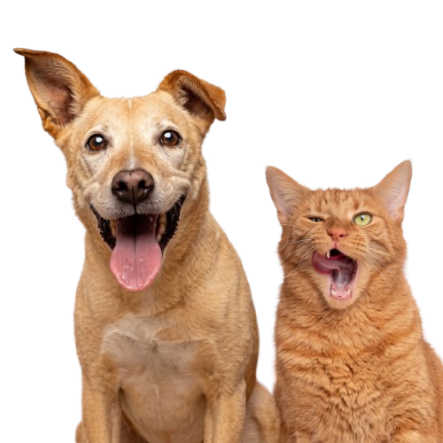

Encontre seu pet.

O AchePet conecta pessoas que perderam seus animais com quem pode ajudar a encontrá-los.

O AchePet conecta pessoas que perderam seus animais com quem pode ajudar a encontrá-los.
